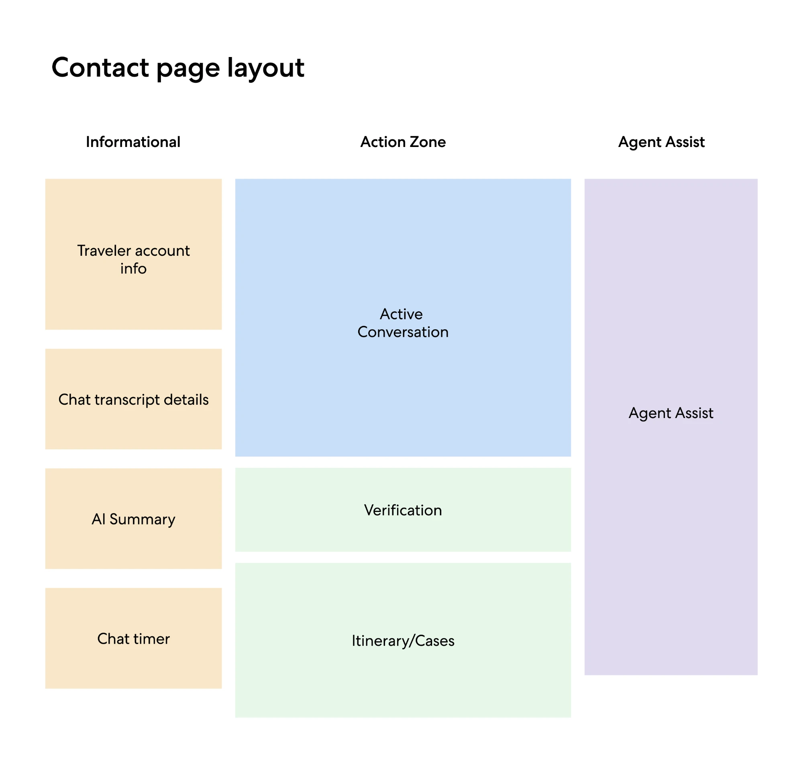
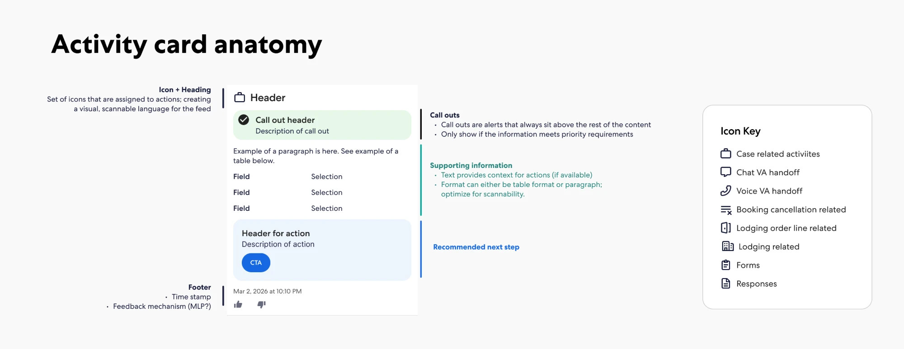
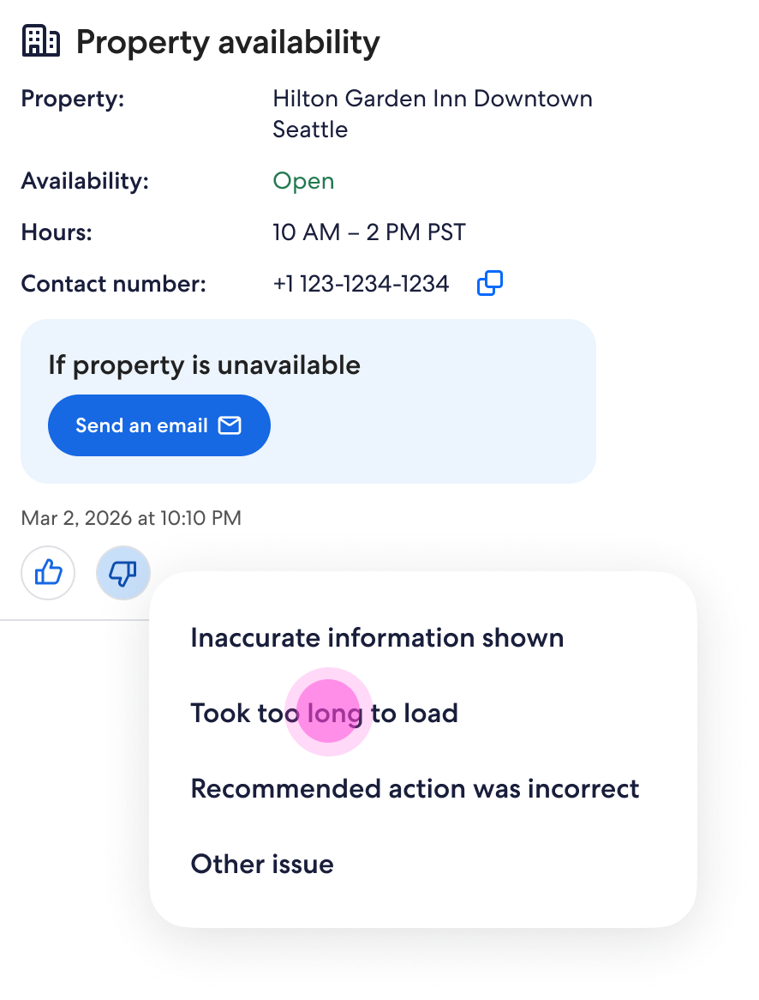
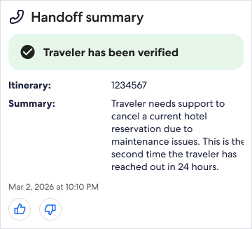

01 · The problem
A cancellation inside the penalty window is where agents slow down
Lodging agents work in OneDesk, Expedia's Salesforce-based service console. A traveler on chat or voice asks to cancel a hotel. If the booking is already inside the penalty window, the agent has to confirm identity, find the itinerary, read the cancellation policy, explain the penalty, and often contact the property to ask for a waiver. All of this happens while they keep the conversation going.
Agent Assist sits in a fixed column on the right of the console. It listens to the conversation, detects intent, and posts activity cards to a feed: a handoff summary, property availability, a cancellation summary, and the action to take. The design question was how to make that feed something agents trust and act on, not one more panel to ignore.
The scenario every prototype is built around
TravelerThe concert I was going to just got canceled, so I need to cancel my hotel booking.
AgentThis booking is non-refundable. Cancelling it will not return the $500 already paid. Would you like to proceed?
TravelerYes, but can we see if I can get a refund?
AgentI can reach out to the property and request a waiver. Give me a moment.
PropertyThis reason does not qualify for a refund exception under our policy.
The same request can end four ways: no waiver, the property cannot be reached, a waiver is approved, or a partial waiver is approved. Each ending needs the agent to see different information and take a different action.
02 · Mapping the console
Finding a home for AI in a screen that was already full
The first step was to understand the console as agents use it today. I worked from screenshots captured in an in-person working session in April, covering the contact page before a case is opened, after it is opened, and the case page itself. A translation tool, Language IO, already lived in the conversation area.
From there I split the contact page into three zones: an informational column on the left, an action zone in the center for the live conversation, verification and itinerary search, and a dedicated Agent Assist column on the right. The column keeps the same position, width and height on every page where Agent Assist is available, so agents always know where to look.

03 · A card system
Container, card types and anatomy
Rather than designing screens per scenario, I defined a small system the AI could compose. The container has a header and a feed, and new cards load into the feed as the conversation moves. Every card shares one anatomy: an icon and title, a body of label and value pairs, an optional call-out or action, a timestamp, and thumbs-up and thumbs-down feedback.
Card types fall into two families. Information cards cover the handoff summary, multiple bookings found, property information, policy summary, cancel booking and booking canceled. Responses are the suggested replies and actions an agent can send or trigger. Each type is documented with its content rules and its states.

04 · Cancellation flows
Prototype – Cancellation with penalty
I prototyped each ending end to end in the full console, from the chat handoff through verification to the closed case. The prototypes were the main artifact for reviews with product, operations and engineering. They let people feel the sequence of cards rather than judge them one at a time.
05 · Trust and closure
Letting agents correct the AI, and close the loop
An assistant that agents can't push back on gets ignored. Every card carries a feedback control. A thumbs-down opens a short list of reasons (inaccurate information, took too long to load, wrong recommended action, other), with an optional comment. This gives the model team labeled signal tied to a specific card.
Closing the case was the other gap. A "Close case" action in the container header starts disposition. It shows a loading state while the AI agent works, then a closed-case card. When disposition fails, the agent gets an inline error and can finish manually.

06 · Iteration
Pre-loading the cards before the agent asks
In the first release, cards arrived one by one in response to the conversation. The feed grew long, and agents waited on each step. In September I proposed pre-loading: once cancel intent is identified, Agent Assist loads the cancellation summary, property information and the cancel action together as collapsed cards.
The plan had a best case and a fallback. In the best case, Agent Assist keeps listening and confirms intent on its own, so the agent never has to. If that wasn't feasible, a fast-follow adds a "Clarify intent with traveler" prompt so the agent confirms manually. The cancel action only shows its options after the cancellation type is chosen, because pre-loading happens before the system knows whether a waiver applies.

Open constraint
Intent verification has latency. The next round of work is a loading state that tells agents what is coming, so the gap reads as progress.
07 · Outcomes and what's next
What shipped, what we learned
- Fixed column, consistent everywhere
- Agents learn one location for AI help, and it never pushes the conversation around.
- A system of cards, not screens
- New intents reuse the same anatomy, so the AI team can add card types without new layouts.
- Feedback on every card
- Agent corrections become labeled data tied to one card and one moment.
- Pre-load over pull
- Loading the likely next steps together cuts the waiting between steps, as long as latency is designed for.
Next, a "sidecar" exploration looks at how Agent Assist could move beyond the fixed column and travel with the agent across tabs.